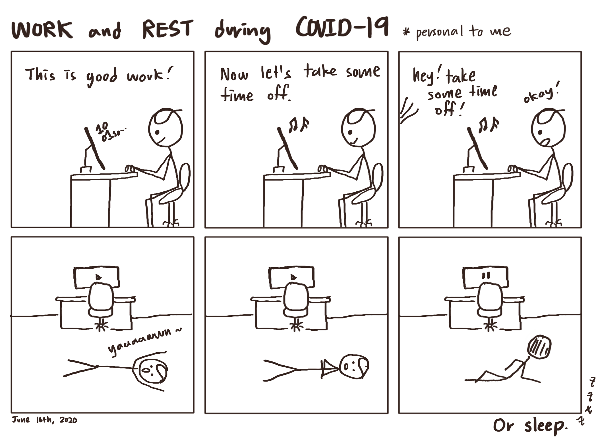

Today, I discovered a shocking news. It is not ‘breaking’ news, but I learn that a famous pop-science Youtuber got accused in 2019 for plagiarising when making his videos and submitting his own research paper. He also gained immense profits by making an interaction-based course (200 dollars to enter) that used outside sources without giving proper credit.
His main areas of interests are artificial intelligence, machine learning, and blockchain, and I used to admire his work. His Youtube videos were funny, focused, and fast-paced. He seemed to be a rockstar who is eager and confident to share all the knowledge he has.
My Question and Concerns
This news made me wonder: How can I share my knowledge or research with the world with integrity? How can I avoid plaigiarism?

A big part of this blog will be reading research papers and sharing what I learned, including a brief summary along with key insights. I believe that reading papers is the surefire way to stay updated on the latest developments and gain valuable knowledge. They have value that goes beyond simply studying textbooks.
In this current world where I am not allowed to go out, research papers are the best way to keep learning. From data science to biology to artificial intelligence, the catalog of research papers is constantly evolving, and I can’t wait to dive into the exciting field.
I watched an incredibly helpful video by Siraj Raval, who is passionate about the field of machine learning, artificial intelligence, and more. I am putting a summary of what he suggested in the video, which I hope will be useful to others as well. All the credit for the following information goes to Siraj’s video, so please check it out.
Here we go!
A few months ago, I noticed that the New York Times changed a lot after the birth of COVID-19. Every day, it shared films that we can binge-watch at home, along with new recipes, books, and even video games. This “At Home” section stayed on the front page along with the regular serious articles.
It was strange to me how a newspaper emphasizes that “not losing your mind” is important, telling me that distractions are necessary right now. It surely felt human, but I did not buy that idea. I would rather “enrich my mind” by using the hours at home to do something meaningful. My school switched entirely to online learning until the end of this school year, and I was sure that there would be myriad ways to diversify my indoor life.
A team of four musicians, including me, created a jazz version of Mr.Blue Sky, composed by the legendary Electric Light Orchestra.
We spent over a month recording ourselves at home and compiling videos! It was so much fun for me to sync the videos on Adobe Premier Pro and add more parts as necessary.
The project was finished on May 16th, and the video was showcased in our school’s last assembly of the year.
Please enjoy!